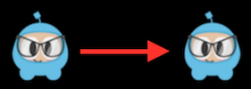
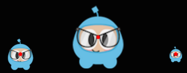
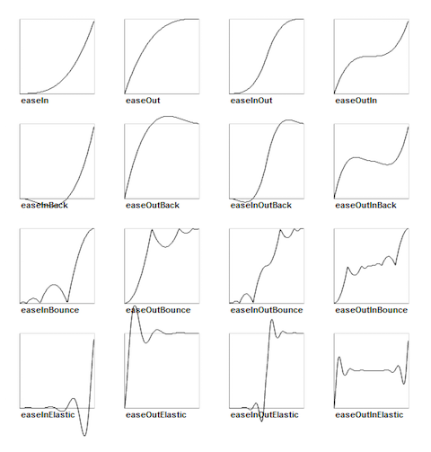

<!DOCTYPE HTML>
<html lang="zh-hans" >
    <head>
        <meta charset="UTF-8">
        <meta content="text/html; charset=utf-8" http-equiv="Content-Type">
        <title>基本动作 · GitBook</title>
        <meta http-equiv="X-UA-Compatible" content="IE=edge" />
        <meta name="description" content="">
        <meta name="generator" content="GitBook 3.2.3">
        
        
        
    
    <link rel="stylesheet" href="../../gitbook/style.css">

    
            
                
                <link rel="stylesheet" href="../../gitbook/gitbook-plugin-search-title/search.css">
                
            
                
                <link rel="stylesheet" href="../../gitbook/gitbook-plugin-toggle-chapters/toggle.css">
                
            
                
                <link rel="stylesheet" href="../../gitbook/gitbook-plugin-highlight/website.css">
                
            
                
                <link rel="stylesheet" href="../../gitbook/gitbook-plugin-fontsettings/website.css">
                
            
        

    

    
        
        <link rel="stylesheet" href="../styles/website.css">
        
    

        
    
    
    <meta name="HandheldFriendly" content="true"/>
    <meta name="viewport" content="width=device-width, initial-scale=1, user-scalable=no">
    <meta name="apple-mobile-web-app-capable" content="yes">
    <meta name="apple-mobile-web-app-status-bar-style" content="black">
    <link rel="apple-touch-icon-precomposed" sizes="152x152" href="../../gitbook/images/apple-touch-icon-precomposed-152.png">
    <link rel="shortcut icon" href="../../gitbook/images/favicon.ico" type="image/x-icon">

    
    <link rel="next" href="sequences.html" />
    
    
    <link rel="prev" href="./" />
    

    </head>
    <body>
        
<div class="book">
    <div class="book-summary">
        
    <nav role="navigation" class="autoshow">
        <ul class="summary">
        <li><a href="https://cocos2d-x.org" class="btn" target="_blank"></a></li>
        <li><a href="#" class="btn" onclick="toggleLanguage()">English</a></li>
        
        
        <li>
            <a href="#" class="btn"><i class="fa fa-book"></i>Cocos Creator</a>
            <ul>
                
                <li><a href="https://docs.cocos2d-x.org/creator/zh/" class="btn">手册文档</a></li>
                
                <li><a href="https://docs.cocos2d-x.org/creator-api/zh/" class="btn">API 参考</a></li>
                
            </ul>
        </li>                
        
    
        
        <li>
            <a href="#" class="btn"><i class="fa fa-book"></i>Cocos2d-x</a>
            <ul>
                
                <li><a href="https://docs.cocos2d-x.org/cocos2d-x/zh/" class="btn">手册文档</a></li>
                
                <li><a href="https://docs.cocos2d-x.org/api-ref/index.html" class="btn">API 参考</a></li>
                
            </ul>
        </li>                
        
          
        </ul>
    </nav>
    
            
<div id="book-search-input" role="search">
    <input type="text" placeholder="输入并搜索" />
</div>

            
                <nav role="navigation">
                


<ul class="summary">
    
    

    

    
        
        <li class="header">新手入门</li>
        
        
    
        <li class="chapter " data-level="1.1" data-path="../">
            
                <a href="../">
            
                    
                    了解引擎
            
                </a>
            

            
            <ul class="articles">
                
    
        <li class="chapter " data-level="1.1.1" data-path="../about/">
            
                <a href="../about/">
            
                    
                    引擎优势
            
                </a>
            

            
        </li>
    
        <li class="chapter " data-level="1.1.2" data-path="../about/learn.html">
            
                <a href="../about/learn.html">
            
                    
                    学习资源
            
                </a>
            

            
        </li>
    
        <li class="chapter " data-level="1.1.3" data-path="../about/help.html">
            
                <a href="../about/help.html">
            
                    
                    获取帮助
            
                </a>
            

            
        </li>
    
        <li class="chapter " data-level="1.1.4" data-path="../about/how.html">
            
                <a href="../about/how.html">
            
                    
                    参与开发
            
                </a>
            

            
        </li>
    

            </ul>
            
        </li>
    
        <li class="chapter " data-level="1.2" data-path="../basic_concepts/">
            
                <a href="../basic_concepts/">
            
                    
                    基本概念
            
                </a>
            

            
            <ul class="articles">
                
    
        <li class="chapter " data-level="1.2.1" data-path="../basic_concepts/director.html">
            
                <a href="../basic_concepts/director.html">
            
                    
                    导演(Director)
            
                </a>
            

            
        </li>
    
        <li class="chapter " data-level="1.2.2" data-path="../basic_concepts/scene.html">
            
                <a href="../basic_concepts/scene.html">
            
                    
                    场景(Scene)
            
                </a>
            

            
        </li>
    
        <li class="chapter " data-level="1.2.3" data-path="../basic_concepts/sprites.html">
            
                <a href="../basic_concepts/sprites.html">
            
                    
                    精灵(Sprite)
            
                </a>
            

            
        </li>
    
        <li class="chapter " data-level="1.2.4" data-path="../basic_concepts/actions.html">
            
                <a href="../basic_concepts/actions.html">
            
                    
                    动作(Action)
            
                </a>
            

            
        </li>
    
        <li class="chapter " data-level="1.2.5" data-path="../basic_concepts/sequences.html">
            
                <a href="../basic_concepts/sequences.html">
            
                    
                    序列(Sequence)
            
                </a>
            

            
        </li>
    
        <li class="chapter " data-level="1.2.6" data-path="../basic_concepts/parent_child.html">
            
                <a href="../basic_concepts/parent_child.html">
            
                    
                    节点关系
            
                </a>
            

            
        </li>
    
        <li class="chapter " data-level="1.2.7" data-path="../basic_concepts/logging.html">
            
                <a href="../basic_concepts/logging.html">
            
                    
                    日志输出
            
                </a>
            

            
        </li>
    

            </ul>
            
        </li>
    

    
        
        <li class="header">基本功能</li>
        
        
    
        <li class="chapter " data-level="2.1" data-path="../sprites/">
            
                <a href="../sprites/">
            
                    
                    精灵(Sprite)
            
                </a>
            

            
            <ul class="articles">
                
    
        <li class="chapter " data-level="2.1.1" data-path="../sprites/creating.html">
            
                <a href="../sprites/creating.html">
            
                    
                    精灵创建
            
                </a>
            

            
            <ul class="articles">
                
    
        <li class="chapter " data-level="2.1.1.1" data-path="../sprites/spritesheets.html">
            
                <a href="../sprites/spritesheets.html">
            
                    
                    使用图集
            
                </a>
            

            
        </li>
    
        <li class="chapter " data-level="2.1.1.2" data-path="../sprites/spriteframe_cache.html">
            
                <a href="../sprites/spriteframe_cache.html">
            
                    
                    使用精灵缓存
            
                </a>
            

            
        </li>
    

            </ul>
            
        </li>
    
        <li class="chapter " data-level="2.1.2" data-path="../sprites/manipulation.html">
            
                <a href="../sprites/manipulation.html">
            
                    
                    精灵控制
            
                </a>
            

            
        </li>
    
        <li class="chapter " data-level="2.1.3" data-path="../sprites/polygon.html">
            
                <a href="../sprites/polygon.html">
            
                    
                    多边形精灵
            
                </a>
            

            
        </li>
    

            </ul>
            
        </li>
    
        <li class="chapter " data-level="2.2" data-path="./">
            
                <a href="./">
            
                    
                    动作(Action)
            
                </a>
            

            
            <ul class="articles">
                
    
        <li class="chapter active" data-level="2.2.1" data-path="basic.html">
            
                <a href="basic.html">
            
                    
                    基本动作
            
                </a>
            

            
        </li>
    
        <li class="chapter " data-level="2.2.2" data-path="sequences.html">
            
                <a href="sequences.html">
            
                    
                    动作序列
            
                </a>
            

            
        </li>
    
        <li class="chapter " data-level="2.2.3" data-path="sequence_internals.html">
            
                <a href="sequence_internals.html">
            
                    
                    动作的克隆和倒转
            
                </a>
            

            
        </li>
    

            </ul>
            
        </li>
    
        <li class="chapter " data-level="2.3" data-path="../scenes/">
            
                <a href="../scenes/">
            
                    
                    场景(Scene)
            
                </a>
            

            
            <ul class="articles">
                
    
        <li class="chapter " data-level="2.3.1" data-path="../scenes/creating.html">
            
                <a href="../scenes/creating.html">
            
                    
                    场景创建
            
                </a>
            

            
        </li>
    
        <li class="chapter " data-level="2.3.2" data-path="../scenes/transitioning.html">
            
                <a href="../scenes/transitioning.html">
            
                    
                    场景切换
            
                </a>
            

            
        </li>
    

            </ul>
            
        </li>
    
        <li class="chapter " data-level="2.4" data-path="../ui_components/">
            
                <a href="../ui_components/">
            
                    
                    UI 组件
            
                </a>
            

            
            <ul class="articles">
                
    
        <li class="chapter " data-level="2.4.1" data-path="../ui_components/labels.html">
            
                <a href="../ui_components/labels.html">
            
                    
                    标签(Label)
            
                </a>
            

            
        </li>
    
        <li class="chapter " data-level="2.4.2" data-path="../ui_components/menus.html">
            
                <a href="../ui_components/menus.html">
            
                    
                    菜单(Menu)
            
                </a>
            

            
        </li>
    
        <li class="chapter " data-level="2.4.3" data-path="../ui_components/buttons.html">
            
                <a href="../ui_components/buttons.html">
            
                    
                    按钮(Button)
            
                </a>
            

            
        </li>
    
        <li class="chapter " data-level="2.4.4" data-path="../ui_components/checkboxes.html">
            
                <a href="../ui_components/checkboxes.html">
            
                    
                    复选框(CheckBox)
            
                </a>
            

            
        </li>
    
        <li class="chapter " data-level="2.4.5" data-path="../ui_components/loading_bar.html">
            
                <a href="../ui_components/loading_bar.html">
            
                    
                    进度条(LoadingBar)
            
                </a>
            

            
        </li>
    
        <li class="chapter " data-level="2.4.6" data-path="../ui_components/sliders.html">
            
                <a href="../ui_components/sliders.html">
            
                    
                    滑动条(Slider)
            
                </a>
            

            
        </li>
    
        <li class="chapter " data-level="2.4.7" data-path="../ui_components/textfields.html">
            
                <a href="../ui_components/textfields.html">
            
                    
                    文本框(TextField)
            
                </a>
            

            
        </li>
    

            </ul>
            
        </li>
    

    
        
        <li class="header">进阶内容</li>
        
        
    
        <li class="chapter " data-level="3.1" data-path="../other_node_types/">
            
                <a href="../other_node_types/">
            
                    
                    特殊节点对象
            
                </a>
            

            
            <ul class="articles">
                
    
        <li class="chapter " data-level="3.1.1" data-path="../other_node_types/tilemap.html">
            
                <a href="../other_node_types/tilemap.html">
            
                    
                    瓦片地图
            
                </a>
            

            
        </li>
    
        <li class="chapter " data-level="3.1.2" data-path="../other_node_types/particles.html">
            
                <a href="../other_node_types/particles.html">
            
                    
                    粒子系统
            
                </a>
            

            
        </li>
    
        <li class="chapter " data-level="3.1.3" data-path="../other_node_types/parallax.html">
            
                <a href="../other_node_types/parallax.html">
            
                    
                    视差滚动
            
                </a>
            

            
        </li>
    

            </ul>
            
        </li>
    
        <li class="chapter " data-level="3.2" data-path="../event_dispatcher/">
            
                <a href="../event_dispatcher/">
            
                    
                    事件分发机制
            
                </a>
            

            
            <ul class="articles">
                
    
        <li class="chapter " data-level="3.2.1" data-path="../event_dispatcher/types.html">
            
                <a href="../event_dispatcher/types.html">
            
                    
                    监听器
            
                </a>
            

            
        </li>
    
        <li class="chapter " data-level="3.2.2" data-path="../event_dispatcher/priority.html">
            
                <a href="../event_dispatcher/priority.html">
            
                    
                    优先级
            
                </a>
            

            
        </li>
    
        <li class="chapter " data-level="3.2.3" data-path="../event_dispatcher/touch.html">
            
                <a href="../event_dispatcher/touch.html">
            
                    
                    触摸事件
            
                </a>
            

            
        </li>
    
        <li class="chapter " data-level="3.2.4" data-path="../event_dispatcher/keyboard.html">
            
                <a href="../event_dispatcher/keyboard.html">
            
                    
                    键盘事件
            
                </a>
            

            
        </li>
    
        <li class="chapter " data-level="3.2.5" data-path="../event_dispatcher/accelerometer.html">
            
                <a href="../event_dispatcher/accelerometer.html">
            
                    
                    加速度传感器事件
            
                </a>
            

            
        </li>
    
        <li class="chapter " data-level="3.2.6" data-path="../event_dispatcher/mouse.html">
            
                <a href="../event_dispatcher/mouse.html">
            
                    
                    鼠标事件
            
                </a>
            

            
        </li>
    
        <li class="chapter " data-level="3.2.7" data-path="../event_dispatcher/custom.html">
            
                <a href="../event_dispatcher/custom.html">
            
                    
                    自定义事件
            
                </a>
            

            
        </li>
    
        <li class="chapter " data-level="3.2.8" data-path="../event_dispatcher/registering.html">
            
                <a href="../event_dispatcher/registering.html">
            
                    
                    进阶话题
            
                </a>
            

            
        </li>
    

            </ul>
            
        </li>
    
        <li class="chapter " data-level="3.3" data-path="../3d/">
            
                <a href="../3d/">
            
                    
                    3D 支持
            
                </a>
            

            
            <ul class="articles">
                
    
        <li class="chapter " data-level="3.3.1" data-path="../3d/sprite3d.html">
            
                <a href="../3d/sprite3d.html">
            
                    
                    3D 精灵
            
                </a>
            

            
        </li>
    
        <li class="chapter " data-level="3.3.2" data-path="../3d/animation.html">
            
                <a href="../3d/animation.html">
            
                    
                    3D 动画
            
                </a>
            

            
        </li>
    
        <li class="chapter " data-level="3.3.3" data-path="../3d/camera.html">
            
                <a href="../3d/camera.html">
            
                    
                    相机(Camera)
            
                </a>
            

            
        </li>
    
        <li class="chapter " data-level="3.3.4" data-path="../3d/cubemap.html">
            
                <a href="../3d/cubemap.html">
            
                    
                    立方体纹理(TextureCube)
            
                </a>
            

            
        </li>
    
        <li class="chapter " data-level="3.3.5" data-path="../3d/skybox.html">
            
                <a href="../3d/skybox.html">
            
                    
                    天空盒(Skybox)
            
                </a>
            

            
        </li>
    
        <li class="chapter " data-level="3.3.6" data-path="../3d/lighting.html">
            
                <a href="../3d/lighting.html">
            
                    
                    光照(Light)
            
                </a>
            

            
        </li>
    
        <li class="chapter " data-level="3.3.7" data-path="../3d/terrain.html">
            
                <a href="../3d/terrain.html">
            
                    
                    地形(Terrain)
            
                </a>
            

            
        </li>
    
        <li class="chapter " data-level="3.3.8" data-path="../3d/tools.html">
            
                <a href="../3d/tools.html">
            
                    
                    常用工具
            
                </a>
            

            
        </li>
    
        <li class="chapter " data-level="3.3.9" data-path="../3d/advanced.html">
            
                <a href="../3d/advanced.html">
            
                    
                    进阶话题
            
                </a>
            

            
        </li>
    

            </ul>
            
        </li>
    
        <li class="chapter " data-level="3.4" data-path="../scripting/">
            
                <a href="../scripting/">
            
                    
                    使用脚本
            
                </a>
            

            
            <ul class="articles">
                
    
        <li class="chapter " data-level="3.4.1" data-path="../scripting/">
            
                <a href="../scripting/">
            
                    
                    脚本组件
            
                </a>
            

            
        </li>
    

            </ul>
            
        </li>
    
        <li class="chapter " data-level="3.5" data-path="../physics/">
            
                <a href="../physics/">
            
                    
                    物理引擎
            
                </a>
            

            
            <ul class="articles">
                
    
        <li class="chapter " data-level="3.5.1" data-path="../physics/concepts.html">
            
                <a href="../physics/concepts.html">
            
                    
                    概念
            
                </a>
            

            
        </li>
    
        <li class="chapter " data-level="3.5.2" data-path="../physics/collisions.html">
            
                <a href="../physics/collisions.html">
            
                    
                    碰撞
            
                </a>
            

            
        </li>
    
        <li class="chapter " data-level="3.5.3" data-path="../physics/queries.html">
            
                <a href="../physics/queries.html">
            
                    
                    查询
            
                </a>
            

            
        </li>
    
        <li class="chapter " data-level="3.5.4" data-path="../physics/debugging.html">
            
                <a href="../physics/debugging.html">
            
                    
                    调试
            
                </a>
            

            
        </li>
    

            </ul>
            
        </li>
    
        <li class="chapter " data-level="3.6" data-path="../audio/">
            
                <a href="../audio/">
            
                    
                    音乐和音效
            
                </a>
            

            
            <ul class="articles">
                
    
        <li class="chapter " data-level="3.6.1" data-path="../audio/playing.html">
            
                <a href="../audio/playing.html">
            
                    
                    背景音乐
            
                </a>
            

            
        </li>
    
        <li class="chapter " data-level="3.6.2" data-path="../audio/operations.html">
            
                <a href="../audio/operations.html">
            
                    
                    声音控制
            
                </a>
            

            
        </li>
    
        <li class="chapter " data-level="3.6.3" data-path="../audio/advanced.html">
            
                <a href="../audio/advanced.html">
            
                    
                    高级功能
            
                </a>
            

            
        </li>
    
        <li class="chapter " data-level="3.6.4" data-path="../audio/engines.html">
            
                <a href="../audio/engines.html">
            
                    
                    Audio Engine TODO
            
                </a>
            

            
        </li>
    

            </ul>
            
        </li>
    
        <li class="chapter " data-level="3.7" data-path="../advanced_topics/">
            
                <a href="../advanced_topics/">
            
                    
                    高级话题
            
                </a>
            

            
            <ul class="articles">
                
    
        <li class="chapter " data-level="3.7.1" data-path="../advanced_topics/filesystem.html">
            
                <a href="../advanced_topics/filesystem.html">
            
                    
                    文件接入
            
                </a>
            

            
        </li>
    
        <li class="chapter " data-level="3.7.2" data-path="../advanced_topics/networking.html">
            
                <a href="../advanced_topics/networking.html">
            
                    
                    网络访问
            
                </a>
            

            
        </li>
    
        <li class="chapter " data-level="3.7.3" data-path="../advanced_topics/oppo.html">
            
                <a href="../advanced_topics/oppo.html">
            
                    
                    OPPO 优化
            
                </a>
            

            
        </li>
    
        <li class="chapter " data-level="3.7.4" data-path="../advanced_topics/optimizing.html">
            
                <a href="../advanced_topics/optimizing.html">
            
                    
                    图形性能优化
            
                </a>
            

            
        </li>
    
        <li class="chapter " data-level="3.7.5" data-path="../advanced_topics/shaders.html">
            
                <a href="../advanced_topics/shaders.html">
            
                    
                    着色器和材质
            
                </a>
            

            
        </li>
    
        <li class="chapter " data-level="3.7.6" data-path="../advanced_topics/sqlite.html">
            
                <a href="../advanced_topics/sqlite.html">
            
                    
                    SQLite 集成 TODO
            
                </a>
            

            
        </li>
    

            </ul>
            
        </li>
    

    
        
        <li class="header">环境与工具</li>
        
        
    
        <li class="chapter " data-level="4.1" data-path="../installation/">
            
                <a href="../installation/">
            
                    
                    环境搭建
            
                </a>
            

            
            <ul class="articles">
                
    
        <li class="chapter " data-level="4.1.1" data-path="../installation/Android-Studio.html">
            
                <a href="../installation/Android-Studio.html">
            
                    
                    Android 平台
            
                </a>
            

            
            <ul class="articles">
                
    
        <li class="chapter " data-level="4.1.1.1" data-path="../installation/Android-Studio.html">
            
                <a href="../installation/Android-Studio.html">
            
                    
                    Android Studio
            
                </a>
            

            
        </li>
    
        <li class="chapter " data-level="4.1.1.2" data-path="../installation/Android-terminal.html">
            
                <a href="../installation/Android-terminal.html">
            
                    
                    命令行 (已弃用)
            
                </a>
            

            
        </li>
    
        <li class="chapter " data-level="4.1.1.3" data-path="../installation/Android-Eclipse.html">
            
                <a href="../installation/Android-Eclipse.html">
            
                    
                    Eclipse (已弃用)
            
                </a>
            

            
        </li>
    

            </ul>
            
        </li>
    
        <li class="chapter " data-level="4.1.2" data-path="../installation/iOS.html">
            
                <a href="../installation/iOS.html">
            
                    
                    iOS
            
                </a>
            

            
        </li>
    
        <li class="chapter " data-level="4.1.3" data-path="../installation/OSX.html">
            
                <a href="../installation/OSX.html">
            
                    
                    macOS
            
                </a>
            

            
        </li>
    
        <li class="chapter " data-level="4.1.4" data-path="../installation/Linux.html">
            
                <a href="../installation/Linux.html">
            
                    
                    Linux 平台
            
                </a>
            

            
        </li>
    
        <li class="chapter " data-level="4.1.5" data-path="../installation/Windows.html">
            
                <a href="../installation/Windows.html">
            
                    
                    Windows 平台
            
                </a>
            

            
        </li>
    
        <li class="chapter " data-level="4.1.6" data-path="../installation/CMake-Guide.html">
            
                <a href="../installation/CMake-Guide.html">
            
                    
                    CMake 指南
            
                </a>
            

            
        </li>
    

            </ul>
            
        </li>
    
        <li class="chapter " data-level="4.2" data-path="../editors_and_tools/cocosCLTool.html">
            
                <a href="../editors_and_tools/cocosCLTool.html">
            
                    
                    引擎工具
            
                </a>
            

            
            <ul class="articles">
                
    
        <li class="chapter " data-level="4.2.1" data-path="../editors_and_tools/cocosCLTool.html">
            
                <a href="../editors_and_tools/cocosCLTool.html">
            
                    
                    cocos 命令
            
                </a>
            

            
        </li>
    
        <li class="chapter " data-level="4.2.2" data-path="../editors_and_tools/creator_to_cocos2dx.html">
            
                <a href="../editors_and_tools/creator_to_cocos2dx.html">
            
                    
                    Creator to Cocos2d-x 插件
            
                </a>
            

            
        </li>
    

            </ul>
            
        </li>
    
        <li class="chapter " data-level="4.3" data-path="../faq/">
            
                <a href="../faq/">
            
                    
                    解决方案常见问题
            
                </a>
            

            
            <ul class="articles">
                
    
        <li class="chapter " data-level="4.3.1" data-path="../faq/android.html">
            
                <a href="../faq/android.html">
            
                    
                    Android
            
                </a>
            

            
        </li>
    
        <li class="chapter " data-level="4.3.2" data-path="../faq/cmake.html">
            
                <a href="../faq/cmake.html">
            
                    
                    CMake
            
                </a>
            

            
        </li>
    
        <li class="chapter " data-level="4.3.3" data-path="../faq/linux.html">
            
                <a href="../faq/linux.html">
            
                    
                    Linux
            
                </a>
            

            
        </li>
    
        <li class="chapter " data-level="4.3.4" data-path="../faq/macos.html">
            
                <a href="../faq/macos.html">
            
                    
                    MacOS
            
                </a>
            

            
        </li>
    
        <li class="chapter " data-level="4.3.5" data-path="../faq/windows.html">
            
                <a href="../faq/windows.html">
            
                    
                    Windows
            
                </a>
            

            
        </li>
    

            </ul>
            
        </li>
    

    

    <li class="divider"></li>

    <li>
        <a href="https://www.gitbook.com" target="blank" class="gitbook-link">
            本书使用 GitBook 发布
        </a>
    </li>
</ul>


                </nav>
            
        

    </div>

    <div class="book-body">
        
            <div class="body-inner">
                
                    

<div class="cocos-navbar navbar-collapse" id="navbar" role="navigation">
    <ul class="nav navbar-nav">
        <li><a href="https://cocos2d-x.org" class="btn" target="_blank"></a></li>
        <li><a href="#" class="btn autohide" onclick="toggleLanguage()">English</a></li>

    
    <li>
        <a href="#" class="btn autohide"><i class="fa fa-book"></i>Cocos Creator</a>
        <ul class="hovershow">
            
            <li><a href="https://docs.cocos2d-x.org/creator/zh/" class="btn">手册文档</a></li>
            
            <li><a href="https://docs.cocos2d-x.org/creator-api/zh/" class="btn">API 参考</a></li>
            
        </ul>
    </li>
    

    
    <li>
        <a href="#" class="btn autohide"><i class="fa fa-book"></i>Cocos2d-x</a>
        <ul class="hovershow">
            
            <li><a href="https://docs.cocos2d-x.org/cocos2d-x/zh/" class="btn">手册文档</a></li>
            
            <li><a href="https://docs.cocos2d-x.org/api-ref/index.html" class="btn">API 参考</a></li>
            
        </ul>
    </li>
    

    </ul>
</div>
<div class="book-header" role="navigation">
    
    <!-- Title -->
    <h1>
        <i class="fa fa-circle-o-notch fa-spin"></i>
        <a href=".." >基本动作</a>
    </h1>
</div>


                    <div class="page-wrapper" tabindex="-1" role="main">
                        <div class="page-inner">
                            
<div id="book-search-results">
    <div class="search-noresults">
    
                                <section class="normal markdown-section">
                                
                                <h1 id="&#x57FA;&#x672C;&#x52A8;&#x4F5C;">&#x57FA;&#x672C;&#x52A8;&#x4F5C;</h1>
<p>&#x57FA;&#x672C;&#x52A8;&#x4F5C;&#x901A;&#x5E38;&#x90FD;&#x662F;&#x5355;&#x4E00;&#x7684;&#x52A8;&#x4F5C;&#xFF0C;&#x7528;&#x6765;&#x5B8C;&#x6210;&#x4E00;&#x4E2A;&#x7B80;&#x5355;&#x7684;&#x76EE;&#x6807;&#x3002;&#x4E0B;&#x9762;&#x901A;&#x8FC7;&#x7B80;&#x5355;&#x7684;&#x793A;&#x4F8B;&#x6765;&#x4ECB;&#x7ECD;&#x5E38;&#x89C1;&#x7684;&#x57FA;&#x672C;&#x52A8;&#x4F5C;&#x3002;</p>
<h2 id="&#x79FB;&#x52A8;">&#x79FB;&#x52A8;</h2>
<p>&#x4F7F;&#x7528; <code>MoveTo</code> <code>MoveBy</code> &#x5B8C;&#x6210;&#x8282;&#x70B9;&#x5BF9;&#x8C61;&#x5728;&#x4E00;&#x4E2A;&#x8BBE;&#x7F6E;&#x7684;&#x65F6;&#x95F4;&#x540E;&#x79FB;&#x52A8;&#x3002;</p>
<pre><code class="lang-cpp"><span class="hljs-keyword">auto</span> mySprite = Sprite::create(<span class="hljs-string">&quot;mysprite.png&quot;</span>);

<span class="hljs-comment">// Move a sprite to a specific location over 2 seconds.</span>
<span class="hljs-keyword">auto</span> moveTo = MoveTo::create(<span class="hljs-number">2</span>, Vec2(<span class="hljs-number">50</span>, <span class="hljs-number">0</span>));

mySprite-&gt;runAction(moveTo);

<span class="hljs-comment">// Move a sprite 50 pixels to the right, and 0 pixels to the top over 2 seconds.</span>
<span class="hljs-keyword">auto</span> moveBy = MoveBy::create(<span class="hljs-number">2</span>, Vec2(<span class="hljs-number">50</span>, <span class="hljs-number">0</span>));

mySprite-&gt;runAction(moveBy);
</code></pre>
<p></p>
<h2 id="&#x65CB;&#x8F6C;">&#x65CB;&#x8F6C;</h2>
<p>&#x4F7F;&#x7528; <code>RotateTo</code> <code>RotateBy</code> &#x5B8C;&#x6210;&#x8282;&#x70B9;&#x5BF9;&#x8C61;&#x5728;&#x4E00;&#x4E2A;&#x8BBE;&#x7F6E;&#x7684;&#x65F6;&#x95F4;&#x540E;&#x987A;&#x65F6;&#x9488;&#x65CB;&#x8F6C;&#x6307;&#x5B9A;&#x89D2;&#x5EA6;&#x3002;</p>
<pre><code class="lang-cpp"><span class="hljs-keyword">auto</span> mySprite = Sprite::create(<span class="hljs-string">&quot;mysprite.png&quot;</span>);

<span class="hljs-comment">// Rotates a Node to the specific angle over 2 seconds</span>
<span class="hljs-keyword">auto</span> rotateTo = RotateTo::create(<span class="hljs-number">2.0f</span>, <span class="hljs-number">40.0f</span>);
mySprite-&gt;runAction(rotateTo);

<span class="hljs-comment">// Rotates a Node clockwise by 40 degree over 2 seconds</span>
<span class="hljs-keyword">auto</span> rotateBy = RotateBy::create(<span class="hljs-number">2.0f</span>, <span class="hljs-number">40.0f</span>);
mySprite-&gt;runAction(rotateBy);
</code></pre>
<p></p>
<h2 id="&#x7F29;&#x653E;">&#x7F29;&#x653E;</h2>
<p>&#x4F7F;&#x7528; <code>ScaleBy</code> <code>ScaleTo</code> &#x5B8C;&#x6210;&#x8282;&#x70B9;&#x5BF9;&#x8C61;&#x7684;&#x6BD4;&#x4F8B;&#x7F29;&#x653E;&#x3002;</p>
<pre><code class="lang-cpp"><span class="hljs-keyword">auto</span> mySprite = Sprite::create(<span class="hljs-string">&quot;mysprite.png&quot;</span>);

<span class="hljs-comment">// Scale uniformly by 3x over 2 seconds</span>
<span class="hljs-keyword">auto</span> scaleBy = ScaleBy::create(<span class="hljs-number">2.0f</span>, <span class="hljs-number">3.0f</span>);
mySprite-&gt;runAction(scaleBy);

<span class="hljs-comment">// Scale X by 5 and Y by 3x over 2 seconds</span>
<span class="hljs-keyword">auto</span> scaleBy = ScaleBy::create(<span class="hljs-number">2.0f</span>, <span class="hljs-number">3.0f</span>, <span class="hljs-number">3.0f</span>);
mySprite-&gt;runAction(scaleBy);

<span class="hljs-comment">// Scale to uniformly to 3x over 2 seconds</span>
<span class="hljs-keyword">auto</span> scaleTo = ScaleTo::create(<span class="hljs-number">2.0f</span>, <span class="hljs-number">3.0f</span>);
mySprite-&gt;runAction(scaleTo);

<span class="hljs-comment">// Scale X to 5 and Y to 3x over 2 seconds</span>
<span class="hljs-keyword">auto</span> scaleTo = ScaleTo::create(<span class="hljs-number">2.0f</span>, <span class="hljs-number">3.0f</span>, <span class="hljs-number">3.0f</span>);
mySprite-&gt;runAction(scaleTo);
</code></pre>
<p></p>
<h3 id="&#x6DE1;&#x5165;&#x6DE1;&#x51FA;">&#x6DE1;&#x5165;&#x6DE1;&#x51FA;</h3>
<p>&#x4F7F;&#x7528; <code>FadeIn</code> <code>FadeOut</code> &#x5B8C;&#x6210;&#x8282;&#x70B9;&#x5BF9;&#x8C61;&#x7684;&#x6DE1;&#x5165;&#xFF0C;&#x6DE1;&#x51FA;&#x3002; <code>FadeIn</code> &#x4FEE;&#x6539;&#x8282;&#x70B9;&#x5BF9;&#x8C61;&#x7684;&#x900F;&#x660E;&#x5EA6;&#x5C5E;&#x6027;&#xFF0C;&#x4ECE;&#x5B8C;&#x5168;&#x900F;&#x660E;&#x5230;&#x5B8C;&#x5168;&#x4E0D;&#x900F;&#x660E;&#xFF0C;<code>FadeOut</code> &#x76F8;&#x53CD;&#x3002;</p>
<pre><code class="lang-cpp"><span class="hljs-keyword">auto</span> mySprite = Sprite::create(<span class="hljs-string">&quot;mysprite.png&quot;</span>);

<span class="hljs-comment">// fades in the sprite in 1 seconds</span>
<span class="hljs-keyword">auto</span> fadeIn = FadeIn::create(<span class="hljs-number">1.0f</span>);
mySprite-&gt;runAction(fadeIn);

<span class="hljs-comment">// fades out the sprite in 2 seconds</span>
<span class="hljs-keyword">auto</span> fadeOut = FadeOut::create(<span class="hljs-number">2.0f</span>);
mySprite-&gt;runAction(fadeOut);
</code></pre>
<p></p>
<h2 id="&#x8272;&#x5F69;&#x6DF7;&#x5408;">&#x8272;&#x5F69;&#x6DF7;&#x5408;</h2>
<p>&#x4F7F;&#x7528; <code>TintTo</code> <code>TintBy</code>&#xFF0C;&#x5C06;&#x4E00;&#x4E2A;&#x5B9E;&#x73B0;&#x4E86; <code>NodeRGB</code> &#x534F;&#x8BAE;&#x7684;&#x8282;&#x70B9;&#x5BF9;&#x8C61;&#x8FDB;&#x884C;&#x8272;&#x5F69;&#x6DF7;&#x5408;&#x3002;</p>
<pre><code class="lang-cpp"><span class="hljs-keyword">auto</span> mySprite = Sprite::create(<span class="hljs-string">&quot;mysprite.png&quot;</span>);

<span class="hljs-comment">// Tints a node to the specified RGB values</span>
<span class="hljs-keyword">auto</span> tintTo = TintTo::create(<span class="hljs-number">2.0f</span>, <span class="hljs-number">120.0f</span>, <span class="hljs-number">232.0f</span>, <span class="hljs-number">254.0f</span>);
mySprite-&gt;runAction(tintTo);

<span class="hljs-comment">// Tints a node BY the delta of the specified RGB values.</span>
<span class="hljs-keyword">auto</span> tintBy = TintBy::create(<span class="hljs-number">2.0f</span>, <span class="hljs-number">120.0f</span>, <span class="hljs-number">232.0f</span>, <span class="hljs-number">254.0f</span>);
mySprite-&gt;runAction(tintBy);
</code></pre>
<p></p>
<h2 id="&#x5E27;&#x52A8;&#x753B;">&#x5E27;&#x52A8;&#x753B;</h2>
<p>&#x4F7F;&#x7528; <code>Animate</code> &#x5BF9;&#x8C61;&#x53EF;&#x4EE5;&#x5F88;&#x5BB9;&#x6613;&#x7684;&#x901A;&#x8FC7;&#x6BCF;&#x9694;&#x4E00;&#x4E2A;&#x77ED;&#x6682;&#x65F6;&#x95F4;&#x8FDB;&#x884C;&#x56FE;&#x50CF;&#x66FF;&#x4EE3;&#x7684;&#x65B9;&#x5F0F;&#xFF0C;&#x5B9E;&#x73B0;&#x4E00;&#x4E2A;&#x7FFB;&#x9875;&#x6548;&#x679C;&#x3002;&#x4E0B;&#x9762;&#x662F;&#x4E00;&#x4E2A;&#x4F8B;&#x5B50;&#xFF1A;</p>
<pre><code class="lang-cpp"><span class="hljs-keyword">auto</span> mySprite = Sprite::create(<span class="hljs-string">&quot;mysprite.png&quot;</span>);

<span class="hljs-comment">// now lets animate the sprite we moved</span>
Vector&lt;SpriteFrame*&gt; animFrames;
animFrames.reserve(<span class="hljs-number">12</span>);
animFrames.pushBack(SpriteFrame::create(<span class="hljs-string">&quot;Blue_Front1.png&quot;</span>, Rect(<span class="hljs-number">0</span>,<span class="hljs-number">0</span>,<span class="hljs-number">65</span>,<span class="hljs-number">81</span>)));
animFrames.pushBack(SpriteFrame::create(<span class="hljs-string">&quot;Blue_Front2.png&quot;</span>, Rect(<span class="hljs-number">0</span>,<span class="hljs-number">0</span>,<span class="hljs-number">65</span>,<span class="hljs-number">81</span>)));
animFrames.pushBack(SpriteFrame::create(<span class="hljs-string">&quot;Blue_Front3.png&quot;</span>, Rect(<span class="hljs-number">0</span>,<span class="hljs-number">0</span>,<span class="hljs-number">65</span>,<span class="hljs-number">81</span>)));
animFrames.pushBack(SpriteFrame::create(<span class="hljs-string">&quot;Blue_Left1.png&quot;</span>, Rect(<span class="hljs-number">0</span>,<span class="hljs-number">0</span>,<span class="hljs-number">65</span>,<span class="hljs-number">81</span>)));
animFrames.pushBack(SpriteFrame::create(<span class="hljs-string">&quot;Blue_Left2.png&quot;</span>, Rect(<span class="hljs-number">0</span>,<span class="hljs-number">0</span>,<span class="hljs-number">65</span>,<span class="hljs-number">81</span>)));
animFrames.pushBack(SpriteFrame::create(<span class="hljs-string">&quot;Blue_Left3.png&quot;</span>, Rect(<span class="hljs-number">0</span>,<span class="hljs-number">0</span>,<span class="hljs-number">65</span>,<span class="hljs-number">81</span>)));
animFrames.pushBack(SpriteFrame::create(<span class="hljs-string">&quot;Blue_Back1.png&quot;</span>, Rect(<span class="hljs-number">0</span>,<span class="hljs-number">0</span>,<span class="hljs-number">65</span>,<span class="hljs-number">81</span>)));
animFrames.pushBack(SpriteFrame::create(<span class="hljs-string">&quot;Blue_Back2.png&quot;</span>, Rect(<span class="hljs-number">0</span>,<span class="hljs-number">0</span>,<span class="hljs-number">65</span>,<span class="hljs-number">81</span>)));
animFrames.pushBack(SpriteFrame::create(<span class="hljs-string">&quot;Blue_Back3.png&quot;</span>, Rect(<span class="hljs-number">0</span>,<span class="hljs-number">0</span>,<span class="hljs-number">65</span>,<span class="hljs-number">81</span>)));
animFrames.pushBack(SpriteFrame::create(<span class="hljs-string">&quot;Blue_Right1.png&quot;</span>, Rect(<span class="hljs-number">0</span>,<span class="hljs-number">0</span>,<span class="hljs-number">65</span>,<span class="hljs-number">81</span>)));
animFrames.pushBack(SpriteFrame::create(<span class="hljs-string">&quot;Blue_Right2.png&quot;</span>, Rect(<span class="hljs-number">0</span>,<span class="hljs-number">0</span>,<span class="hljs-number">65</span>,<span class="hljs-number">81</span>)));
animFrames.pushBack(SpriteFrame::create(<span class="hljs-string">&quot;Blue_Right3.png&quot;</span>, Rect(<span class="hljs-number">0</span>,<span class="hljs-number">0</span>,<span class="hljs-number">65</span>,<span class="hljs-number">81</span>)));

<span class="hljs-comment">// create the animation out of the frames</span>
Animation* animation = Animation::createWithSpriteFrames(animFrames, <span class="hljs-number">0.1f</span>);
Animate* animate = Animate::create(animation);

<span class="hljs-comment">// run it and repeat it forever</span>
mySprite-&gt;runAction(RepeatForever::create(animate));
</code></pre>
<h2 id="&#x53D8;&#x901F;&#x8FD0;&#x52A8;">&#x53D8;&#x901F;&#x8FD0;&#x52A8;</h2>
<p>&#x53D8;&#x901F;&#x52A8;&#x4F5C;&#x53EF;&#x4EE5;&#x8BA9;&#x8282;&#x70B9;&#x5BF9;&#x8C61;&#x5177;&#x6709;&#x52A0;&#x901F;&#x5EA6;&#xFF0C;&#x4EA7;&#x751F;&#x5E73;&#x6ED1;&#x540C;&#x65F6;&#x76F8;&#x5BF9;&#x590D;&#x6742;&#x7684;&#x52A8;&#x4F5C;&#xFF0C;&#x6240;&#x4EE5;&#x53EF;&#x4EE5;&#x7528;&#x53D8;&#x901F;&#x52A8;&#x4F5C;&#x6765;&#x6A21;&#x4EFF;&#x4E00;&#x4E9B;&#x7269;&#x7406;&#x8FD0;&#x52A8;&#xFF0C;&#x8FD9;&#x6837;&#x6BD4;&#x5B9E;&#x9645;&#x4F7F;&#x7528;&#x7269;&#x7406;&#x5F15;&#x64CE;&#x7684;&#x6027;&#x80FD;&#x6D88;&#x8017;&#x4F4E;&#xFF0C;&#x4F7F;&#x7528;&#x8D77;&#x6765;&#x4E5F;&#x7B80;&#x5355;&#x3002;&#x5F53;&#x7136;&#x4F60;&#x4E5F;&#x53EF;&#x4EE5;&#x5C06;&#x53D8;&#x901F;&#x52A8;&#x4F5C;&#x5E94;&#x7528;&#x5230;&#x52A8;&#x753B;&#x83DC;&#x5355;&#x548C;&#x6309;&#x94AE;&#x4E0A;&#xFF0C;&#x5B9E;&#x73B0;&#x4F60;&#x60F3;&#x8981;&#x7684;&#x6548;&#x679C;&#x3002;</p>
<p></p>
<p>Cocos2d-x &#x652F;&#x6301;&#x4E0A;&#x56FE;&#x4E2D;&#x7684;&#x5927;&#x90E8;&#x5206;&#x53D8;&#x901F;&#x52A8;&#x4F5C;&#xFF0C;&#x5B9E;&#x73B0;&#x8D77;&#x6765;&#x4E5F;&#x5F88;&#x7B80;&#x5355;&#x3002;&#x6211;&#x4EEC;&#x6765;&#x770B;&#x4E2A;&#x4F8B;&#x5B50;&#xFF0C;&#x4E00;&#x4E2A;&#x7CBE;&#x7075;&#x4ECE;&#x5C4F;&#x5E55;&#x9876;&#x90E8;&#x843D;&#x4E0B;&#x7136;&#x540E;&#x4E0D;&#x65AD;&#x8DF3;&#x52A8;&#xFF1A;</p>
<pre><code class="lang-cpp"><span class="hljs-comment">// create a sprite</span>
<span class="hljs-keyword">auto</span> mySprite = Sprite::create(<span class="hljs-string">&quot;mysprite.png&quot;</span>);

<span class="hljs-comment">// create a MoveBy Action to where we want the sprite to drop from.</span>
<span class="hljs-keyword">auto</span> move = MoveBy::create(<span class="hljs-number">2</span>, Vec2(<span class="hljs-number">200</span>, dirs-&gt;getVisibleSize().height -
 newSprite2-&gt;getContentSize().height));

<span class="hljs-comment">// create a BounceIn Ease Action</span>
<span class="hljs-keyword">auto</span> move_ease_in = EaseBounceIn::create(move-&gt;clone() );
<span class="hljs-keyword">auto</span> move_ease_in_back = move_ease_in-&gt;reverse();

<span class="hljs-comment">// create a delay that is run in between sequence events</span>
<span class="hljs-keyword">auto</span> delay = DelayTime::create(<span class="hljs-number">0.25f</span>);

<span class="hljs-comment">// create the sequence of actions, in the order we want to run them</span>
<span class="hljs-keyword">auto</span> seq1 = Sequence::create(move_ease_in, delay, move_ease_in_back,
    delay-&gt;clone(), <span class="hljs-literal">nullptr</span>);

<span class="hljs-comment">// run the sequence and repeat forever.</span>
mySprite-&gt;runAction(RepeatForever::create(seq1));
</code></pre>
<p>&#x590D;&#x6742;&#x7684;&#x52A8;&#x4F5C;&#x5F88;&#x96BE;&#x5728;&#x8FD9;&#x6837;&#x7684;&#x6587;&#x672C;&#x91CC;&#x8868;&#x793A;&#xFF0C;&#x8981;&#x662F;&#x770B;&#x6548;&#x679C;&#x7684;&#x8BDD;&#x6700;&#x597D;&#x53BB;&#x8FD0;&#x884C;&#x4E00;&#x4E0B;&#x672C;&#x6307;&#x5357;&#x7684; <a href="https://github.com/chukong/programmers-guide-samples/tree/v3.16" target="_blank">&#x4EE3;&#x7801;&#x793A;&#x4F8B;</a>&#xFF0C;&#x6216;&#x8005;&#x8FD0;&#x884C;&#x5F15;&#x64CE;&#x4EE3;&#x7801;&#x7684;&#x6D4B;&#x8BD5;&#x9879;&#x76EE; <code>cpp-tests</code>&#xFF0C;&#x5728;&#x5B50;&#x83DC;&#x5355; <code>3:Actions - Basic</code> &#x4E2D;&#x6709;&#x57FA;&#x672C;&#x7684;&#x52A8;&#x4F5C;&#x6548;&#x679C;&#x5C55;&#x793A;&#x3002;</p>
<blockquote>
<p><em>&#x8FD0;&#x884C;&#x6D4B;&#x8BD5;&#x9879;&#x76EE;&#x7684;&#x65B9;&#x6CD5;&#xFF0C;&#x53C2;&#x8003;&#x672C;&#x6587;&#x6863;&#x7684; <a href="../installation/">&#x73AF;&#x5883;&#x642D;&#x5EFA;</a> &#x7AE0;&#x8282;</em> .</p>
</blockquote>

                                
                                </section>
                            
    </div>
    <div class="search-results">
        <div class="has-results">
            
            <h1 class="search-results-title"><span class='search-results-count'></span> results matching "<span class='search-query'></span>"</h1>
            <ul class="search-results-list"></ul>
            
        </div>
        <div class="no-results">
            
            <h1 class="search-results-title">No results matching "<span class='search-query'></span>"</h1>
            
        </div>
    </div>
</div>

                        </div>
                    </div>
                
            </div>

            
                
                <a href="./" class="navigation navigation-prev " aria-label="Previous page: 动作(Action)">
                    <i class="fa fa-angle-left"></i>
                </a>
                
                
                <a href="sequences.html" class="navigation navigation-next " aria-label="Next page: 动作序列">
                    <i class="fa fa-angle-right"></i>
                </a>
                
            
        
    </div>

    <script>
        var gitbook = gitbook || [];
        gitbook.push(function() {
            gitbook.page.hasChanged({"page":{"title":"基本动作","level":"2.2.1","depth":2,"next":{"title":"动作序列","level":"2.2.2","depth":2,"path":"actions/sequences.md","ref":"actions/sequences.md","articles":[]},"previous":{"title":"动作(Action)","level":"2.2","depth":1,"path":"actions/index.md","ref":"actions/index.md","articles":[{"title":"基本动作","level":"2.2.1","depth":2,"path":"actions/basic.md","ref":"actions/basic.md","articles":[]},{"title":"动作序列","level":"2.2.2","depth":2,"path":"actions/sequences.md","ref":"actions/sequences.md","articles":[]},{"title":"动作的克隆和倒转","level":"2.2.3","depth":2,"path":"actions/sequence_internals.md","ref":"actions/sequence_internals.md","articles":[]}]},"dir":"ltr"},"config":{"plugins":["-lunr","-search","github-issue-feedback-language-custom","search-title","anchorjs","toggle-chapters","sharing"],"styles":{"website":"./styles/website.css"},"pluginsConfig":{"search":{"maxIndexSize":1000000000},"lunr":{"maxIndexSize":1000000000},"fontsettings":{"theme":"white","family":"sans","size":2},"search-title":{},"highlight":{},"sharing":{"qq":true,"all":["facebook","google","twitter","weibo","instapaper"],"douban":false,"facebook":true,"weibo":true,"instapaper":false,"whatsapp":false,"hatenaBookmark":false,"twitter":true,"messenger":false,"line":false,"vk":false,"pocket":false,"google":false,"viber":false,"stumbleupon":false,"qzone":false,"linkedin":false},"github-issue-feedback-language-custom":{"repo":"cocos-creator/creator-docs","branch":"master"},"theme-default":{"styles":{"website":"styles/website.css","pdf":"styles/pdf.css","epub":"styles/epub.css","mobi":"styles/mobi.css","ebook":"styles/ebook.css","print":"styles/print.css"},"showLevel":false},"anchorjs":{},"toggle-chapters":{}},"theme":"default","pdf":{"pageNumbers":true,"fontSize":12,"fontFamily":"Arial","paperSize":"a4","chapterMark":"pagebreak","pageBreaksBefore":"/","margin":{"right":62,"left":62,"top":56,"bottom":56}},"structure":{"langs":"LANGS.md","readme":"index.md","glossary":"GLOSSARY.md","summary":"SUMMARY.md"},"variables":{"products":[{"name":"Cocos Creator","links":[{"name":"手册文档","link":"https://docs.cocos2d-x.org/creator/zh/"},{"name":"API 参考","link":"https://docs.cocos2d-x.org/creator-api/zh/"}]},{"name":"Cocos2d-x","links":[{"name":"手册文档","link":"https://docs.cocos2d-x.org/cocos2d-x/zh/"},{"name":"API 参考","link":"https://docs.cocos2d-x.org/api-ref/index.html"}]}],"version":[{"name":"3.x","links":[{"name":"3.x","link":"https://docs.cocos2d-x.org/cocos2d-x/v3/zh/"},{"name":"4.x","link":"https://docs.cocos2d-x.org/cocos2d-x/v4/zh/"}]}]},"language":"zh-hans","gitbook":"*"},"file":{"path":"actions/basic.md","mtime":"2021-03-30T02:21:10.007Z","type":"markdown"},"gitbook":{"version":"3.2.3","time":"2021-03-30T02:49:05.393Z"},"basePath":"..","book":{"language":"zh"}});
        });
    </script>
</div>

        
    
    <script src="../../gitbook/gitbook.js"></script>
    <script src="../../gitbook/theme.js"></script>
    
        
        <script src="../../gitbook/gitbook-plugin-github-issue-feedback-language-custom/plugin.js"></script>
        
    
        
        <script src="../../gitbook/gitbook-plugin-search-title/jquery.mark.min.js"></script>
        
    
        
        <script src="../../gitbook/gitbook-plugin-search-title/search.js"></script>
        
    
        
        <script src="../../gitbook/gitbook-plugin-anchorjs/anchor.min.js"></script>
        
    
        
        <script src="../../gitbook/gitbook-plugin-anchorjs/anchor-style.js"></script>
        
    
        
        <script src="../../gitbook/gitbook-plugin-toggle-chapters/toggle.js"></script>
        
    
        
        <script src="../../gitbook/gitbook-plugin-sharing/buttons.js"></script>
        
    
        
        <script src="../../gitbook/gitbook-plugin-fontsettings/fontsettings.js"></script>
        
    

    <script type="text/javascript">
    function toggleLanguage () {
        var path = location.href;
        // console.log(path);
        if (path.indexOf('/zh') !== -1) {
            path = path.replace(/\/zh[\/$\s]/i, '/en/');
        } else if (path.indexOf('/en') !== -1) {
            path = path.replace(/\/en[\/$\s]/i, '/zh/');
        }
        // console.log('after: ' + path);    
        location.assign(path);
    }
    </script>

    </body>
</html>

